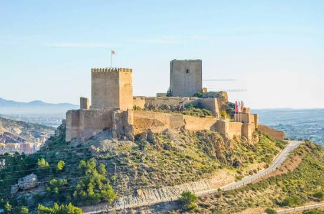
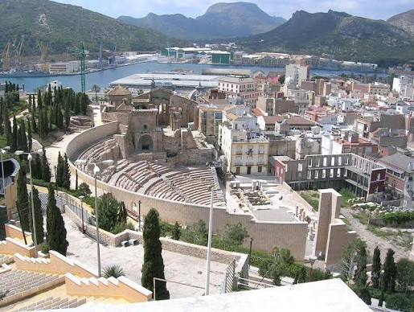
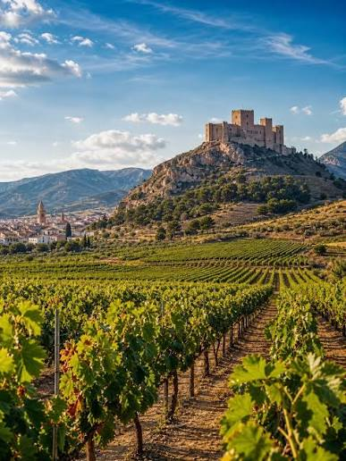

 Conocida como la Ciudad del Sol, destaca por su fortaleza medieval y su Semana Santa declarada de Interés Turístico Internacional. ♡ Me gusta ↗ Web oficial
 Tres milenios de historia mediterránea, arquitectura modernista y yacimientos romanos junto a un puerto natural único. ♡ Me gusta ↗ Web oficial
 Tierra de Monastrell, vinos con denominación de origen, paisajes de secano y un castillo coronando el cerro. ♡ Me gusta ↗ Web oficial